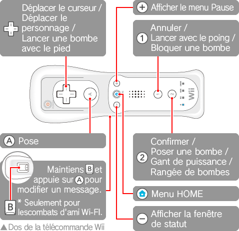

8 |
Commandes |
 |
|
Voici un bref aperçu des commandes. Tu trouveras également des instructions sur l'utilisation de chaque bouton dans les différents menus.
Tenir la télécommande Wii à l'horizontale

La fonction de vibration de la manette Nintendo GameCube ne fonctionne pas avec ce jeu.
|
||||||||||||||||||||||||||||||||||||||||||||||||||||||||||||||||||||||||||||||||||||
 |
 |
 |